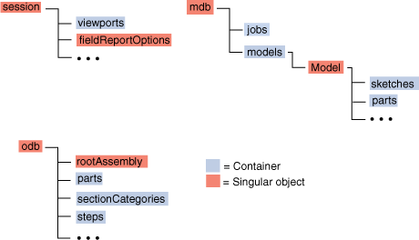
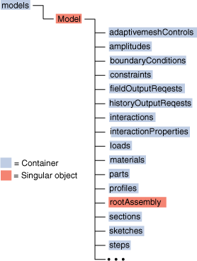
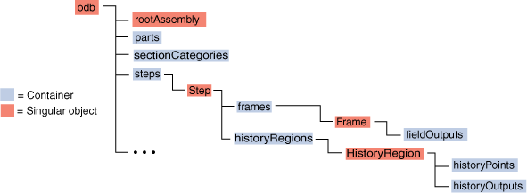
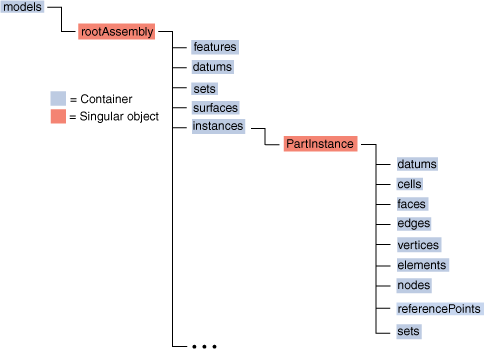
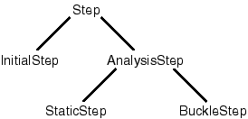

The Abaqus object model#
We have already discussed how Python provides built-in objects like integers, lists, dictionaries, and strings. When you are writing Abaqus Scripting Interface scripts, you need to access these built-in objects together with the objects used by Abaqus/CAE. These Abaqus Scripting Interface objects extend Python with new types of objects. The hierarchy and the relationship between these objects is called the Abaqus object model. The following sections describe the Abaqus object model in more detail.
About the Abaqus object model#
The object model is an important concept in object-oriented programming. The object model consists of the following:
A definition of each Abaqus Scripting Interface object including its methods and data members. The object definitions are found in the references.
Definitions of the relationships between the objects. These relationships form the structure or the hierarchy of the object model. The relationships between the objects are summarized in the following list:
Ownership
The ownership hierarchy defines the access path to the objects in the Abaqus model.
Associations
Associations describe the relationships between the objects; for example, whether one object refers to another and whether an object is an instance of another.
Abaqus extends Python with approximately 500 additional objects, and there are many relationships between these objects. As a result, the complete Abaqus object model is too complex to illustrate in a single figure.
In general terms the Abaqus object model is divided into the Session, the Mdb, and the Odb objects, as shown in Figure 1.
{kind=link}

Figure 1. The Abaqus object model.#
An object in the object model can be one of the following:
Container
A Container is an object that contains objects of a similar type. A container in the Abaqus object model can be either a repository or a sequence. For example, the steps container is a repository that contains all the steps in the analysis. Your scripts use the steps container to access a step.
Singular object
Objects that are not containers are shown as a Singular object. A singular object contains no other objects of a similar type; for example, the Session object and the Mdb object. There is only one Session object and only one Mdb object in the Abaqus object model.
The … at the end of the object models shown in this section indicates that there are additional objects in the model that are not included in the figure. For clarity, the figures show only the most commonly used objects in the object model.
The statement from abaqus import * imports the Session object (named session) and the Mdb object (named mdb) and makes them available to your scripts. The statement from odbAccess import * allows you to access Abaqus output results from your script. The Session, Mdb, and Odb objects are described as follows:
Session
Session objects are objects that are not saved between Abaqus/CAE sessions; for example, the objects that define viewports, remote queues, and user-defined views, as shown in Figure 2.

Mdb
The statement from abaqus import * creates an instance of the Mdb object called mdb. Mdb objects are objects that are saved in a model database and can be recovered between Abaqus/CAE sessions. Mdb objects include the Model object and the Job object. The Model object, in turn, is comprised of Part objects, Section objects, Material objects, Step objects, etc. Figure 4 shows the basic structure of the objects under the Model object. For more information, see The Model object model.

Figure 4. The structure of the objects under the Model object.#
Odb
Odb objects are saved in an output database and contain both model and results data, as shown in Figure 5.

Figure 5. The Odb object model.#
Most of the commands in the Abaqus Scripting Interface begin with either the Session, the Mdb, or the Odb object. For example,
session.viewports['Viewport-1'].bringToFront() mdb.models['wheel'].rootAssembly.regenerate() stress = odb.steps['Step-1'].frames[3].fieldOutputs['S']
{kind=link}
{kind=link}
Using tab completion to explore the object model#
You can use tab completion from the command line interface to speed up your typing and to explore the object model. For example, you can type mdb.models[‘Model-1’].parts[ in the command line interface. When you press the [Tab] key, the command line cycles through the parts in the model. When you press [Shift][Tab], the command line cycles backwards through the parts in the model.
Tab completion also searches the file system when it detects an incomplete string. For example,
from part import THR[Tab]
from part import THREE_D
openMdb('hinge_t[Tab]
openMdb('hinge_tutorial.mdb')
from odbAccess import *
myOdb=openOdb('vi[Tab]
myOdb=openOdb('viewer_tutorial.odb')
In most cases when you type in a constructor or a method and include the opening parenthesis, tab completion prompts you to provide a value for a keyword argument. For example,
mdb.models['Model-1'].Part([Tab]
mdb.models['Model-1'].Part(name=
When you press the Tab key, the command line cycles through the arguments to the method.
You can use tab completion when you are accessing an output database. For example,
p=myOdb.parts[[Tab]
p=myOdb.parts['Part-1']
You can also use tab completion when you are accessing an output database from the Abaqus Python prompt. For example,
abaqus python
>>>from odbAccess import *
>>>myOdb=openOdb('viewer_tutorial.odb')
>>>p=myOdb.parts[[Tab]
>>>p=myOdb.parts['Part-1']
The Model object model#
The Model object contains many objects. Figure 1 and Figure 2 show the most commonly used objects that are contained in the Part and RootAssembly.
Figure 1. The Part object model.#
{kind=link}

Figure 2. The RootAssembly object model.#
The Job object is separate from the Model object. The object model for the Job object is straightforward; the Job object owns no other objects. The Job object refers to a Model object but is not owned by the Model object.
Using the object model#
Object model figures such as Figure 4 provide important information to the Abaqus Scripting Interface programmer.
The object model describes the relationships between objects. For example, in object-oriented programming terms a geometry object, such as a Cell, Face, Edge, or Vertex object, is said to be owned by the Part object. The Part object, in turn, is owned by the Model object. This ownership relationship between objects is referred to as the ownership hierarchy of the object model.
Ownership implies that if an object is copied, everything owned by that object is also copied. Similarly, if an object is deleted, everything owned by the object is deleted. This concept is similar to parent-child relationships in Abaqus/CAE. If you delete a Part, all the children of the part—such as geometry, datums, and regions—are also deleted.
The relationships between objects are described in the Path and Access descriptions in the command reference. For example, the following statement uses the path to a Cell object:
cell4 = mdb.models['block'].parts['crankcase'].cells[4]
The statement mirrors the structure of the object model. The Cell object is owned by a Part object, the Part object is owned by a Model object, and the Model object is owned by the Mdb object.
The associations between the objects are captured by the object model. Objects can refer to other objects; for example, the section objects refer to a material, and the interaction objects refer to a region, to steps, and possibly to amplitudes. An object that refers to another object usually has a data member that indicates the name of the object to which it is referring. For example, material is a member of the section objects, and createStepName is a member of the interaction objects.
Abstract base type#
The Abaqus object model includes the concept of an abstract base type. An abstract base type allows similar objects to share common attributes. For example, pressure and concentrated force are both kinds of loads. Object-oriented programmers call the relationship between pressure and load an is a relationship—a pressure is a kind of load. In this example Load is the name of the abstract base type. In the type hierachy Pressure and ConcentratedForce types have a base type Load. A Pressure is a Load.
In Figure 1 AnalysisStep and Step are both abstract base types. In terms of the real world a static step is an analysis step and a static step is also a step. In terms of the object model a StaticStep object is an AnalysisStep object and a StaticStep object is also a Step object.
{kind=link}

Figure 1. An example of the is a relationships between objects.#
In contrast the object model figures described at the beginning of this section show what object-oriented programmers call has a relationships between objects. For example, a session has a viewport repository, and a model has a root assembly.
Abaqus uses the name of the abstract base type as the name of the repository that contains objects of similar types. For example, the StaticStep, BuckleStep, and FrequencyStep constructors all create objects in the steps repository. Other abstract base types include Amplitude, BoundaryCondition, Datum, Field, Interaction, and Section.
The term abstract implies that the Abaqus object model does not contain an object that has the type of an abstract base type. For example, there are no objects of type Load or Step in the Abaqus object model. In contrast, the Feature object is a base type, but it is not abstract. The Abaqus object model includes Feature objects.
Importing modules to extend the object model#
To access the objects referred to by the Model object, such as Part and Section objects, Abaqus/CAE extends or augments the object model by importing additional modules. For example, to create or access a Part object, Abaqus/CAE needs to import the part module. Abaqus/CAE imports all the modules when you start a session. As a result the entire object model is available to your scripts.
However, in some cases, your script may need to import a module; for example, to access a module constant, type, or function. In addition, it is useful for you to know which module Abaqus/CAE imported to augment the object model with a particular object. You have already seen the syntax to import a module:
import part
import section
In general, you should use the following approach to importing Abaqus modules:
import modulename
The description of an object in the references includes an Access section that describes which module Abaqus/CAE imported to make the object available and how you can access the object from a command. After Abaqus/CAE imports a module, all the objects associated with the module become available to you. In addition, all the methods and members associated with each object are also available.
The following table describes the relationship between some of the modules in the Abaqus Scripting Interface and the functionality of the modules and toolsets found in Abaqus/CAE:
Module |
Abaqus/CAE functionality |
|---|---|
assembly |
The Assembly module |
datum |
The Datum toolset |
interaction |
The Interaction module |
job |
The Job module |
load |
The Load module |
material |
Materials in the Property module |
mesh |
The Mesh module |
part |
The Part module |
partition |
The Partition toolset |